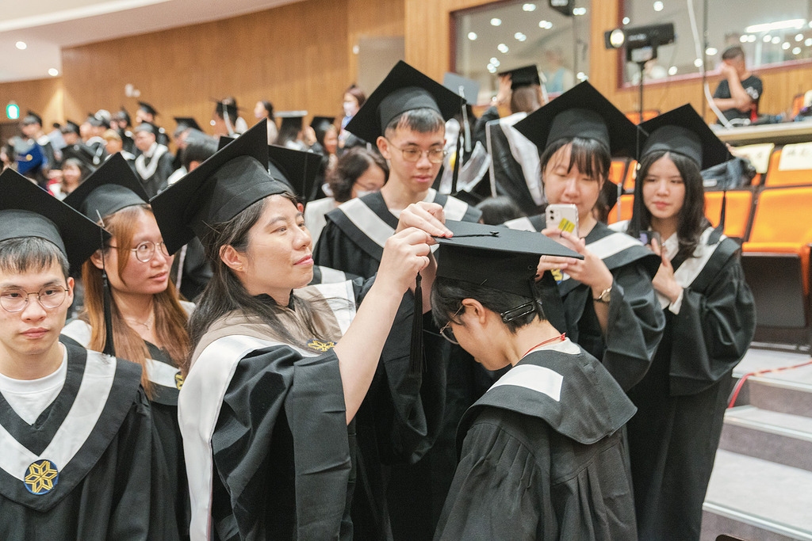

最美的告別
夏天是告別的季節，也是收穫的季節。畢業典禮上，學士服點綴著整個校園， 畢業生們互道珍重，帶著四年來的回憶與成長，準備踏上人生的新旅程。
設計學院的畢業展覽在這個時候達到高潮，學生們將四年所學凝聚成一件件作品， 在展場中爆發創意與熱情。這些作品不僅是學習成果的展現，更是對未來的期許與夢想。
這個季節充滿了感動與不捨，但也充滿了對未來的期待。畢業生們帶著在雲科大 學到的知識與技能，準備在各自的領域中發光發熱。這是結束，也是新的開始。

SUMMER MEMORY
6 月 — 8 月
告別、盛放、熱情
雲林特有的炙熱陽光，讓校園色彩飽滿。
這是告別的季節，也是收穫與綻放的時刻。
夏天是告別的季節，也是收穫的季節。畢業典禮上，學士服點綴著整個校園， 畢業生們互道珍重，帶著四年來的回憶與成長，準備踏上人生的新旅程。
設計學院的畢業展覽在這個時候達到高潮，學生們將四年所學凝聚成一件件作品， 在展場中爆發創意與熱情。這些作品不僅是學習成果的展現，更是對未來的期許與夢想。
這個季節充滿了感動與不捨，但也充滿了對未來的期待。畢業生們帶著在雲科大 學到的知識與技能，準備在各自的領域中發光發熱。這是結束，也是新的開始。
夏天的校園在陽光照耀下展現出最飽滿的色彩，從校花荷花到鳳凰木，處處都是盛放的象徵。
除了鳳凰花開之外，芒果樹是最能代表畢業生的共同記憶。在畢業典禮這天，校方會邀請畢業生「喀檨仔」，將芒果送給心中想要感謝的人，在離校前留下美好的回憶。
來收集最後的甜蜜回憶吧！滑動滑鼠或手指，接住掉下來的芒果，小心不要接到樹葉喔！
荷花是雲科大的校花。荷花池迎來一年中最美的時刻，粉色的、白色的荷花在綠葉間綻放，吸引無數師生與訪客駐足欣賞。這是校園裡最受歡迎的景點之一，也是夏天最動人的風景。
鳳凰木開出火紅的花朵。鳳凰花開時，又是離別的時刻。這些花朵見證著畢業生的告別，也象徵著新旅程的開始。
體育館周圍的阿勃勒開出金黃色的花朵，一串串垂掛在枝頭，為夏日校園增添亮麗的色彩。
從畢業典禮到設計畢展，夏天的校園充滿了告別與收穫的活動。
學生們將創意與技術結合，呈現出令人驚艷的作品。展場中充滿了對設計的熱情與對未來的憧憬，這是四年學習成果的完美展現。
從畢業典禮到各系的送舊活動，整個校園都沉浸在告別的氛圍中，同時也充滿了對未來的期待。這些活動是畢業生們最後的校園回憶。